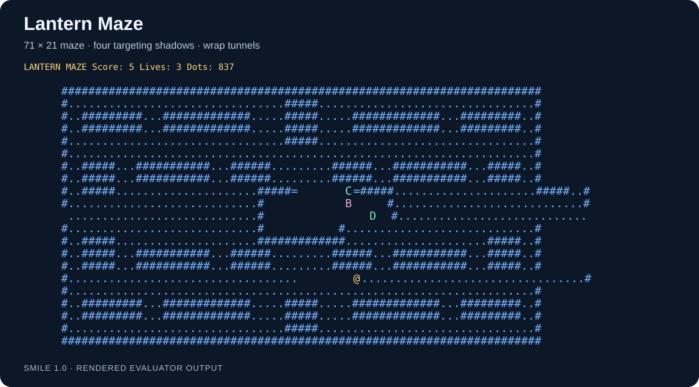

Ideas into working software
Agentic AI Projects
Explore six projects by Louiery Sincioco: tools for work and everyday life, programming languages, and the world of Sin Star I.

PMT
PMT brings project planning, software delivery, QA, team documentation, diagrams, and daily coordination into one application.
Explore project
Life 2.0
Life 2.0 is a native iPhone and iPad app for tracking recurring activities, building routines, and exploring completion patterns.
Explore project
Sin Star I
A science-fantasy RPG in development, built with the SMILE 2.0 Game Engine and supported by an illustrated script and storyboard.
Explore project
SMILE 2.0
A BASIC-inspired programming language, native Windows compiler and game-development toolchain powering Sin Star I.
Explore project
Sin AI Prompt
A native Windows HTML prompt editor with rich text editing, layered image annotation, and document organization.
Explore project
SMILE 1.0
An educational BASIC-like language and responsive desktop IDE that transpile readable programs into ten destination languages.
Explore project